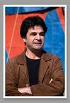

|
|
|
Browsing
Contact Us |
Campaigners |
Face to Face |
Tribune |
Interview |
News |
On the Web |
One Million |
Report
Farsi | Français | German | Italian | Spanish | العربية Also in this section
|
 Interview with Movie Director Jafar Panahi Paying a Price in a Social Movement is InevitableSaturday 1 September 2007 Conducted by: Delaram Ali and Kave Mozafari Translated by: MA Born in 1960 in the city of Mianeh , Jafar Panahi is the best known Iranian Director in the world. His two films, Dayereh (Circle) and offside, which never received the required license to be shown [inside Iran], was able to bring to public attention, the suffering of the Iranian Women. He is among the supporters and a signatory of the One Million Signatures Campaign Demanding a Change to Discriminatory Laws in Iran. We sat with him to talk about women’s issues as well as the Campaign. Mr. Panahi, what was the idea and motive behind the making of the movies Circle and offside? Meaning why did you put your emphasis on women’s issue? In the very first movies that I directed, including Baad Konak (Balloon), the theme and the main emphasis has always been the issue of “social injustices” and naturally when you live in a society such as Iran, you have to deal with women’s issue. I do not mean that women are the only subject of these injustices but rather they are the most deprived segment. Of course men are affected by these discriminations as well. Since they have families and in a society where such discrimination abounds, it will affect them as well. Of course in neither of these two movies, have we taken sides but rather we have narrated the reality and let the viewer’s judge where the discrimination comes from. Is it because of wrong policies? Incorrect culture? Is it rooted in religion and tradition? Or the outcome of discriminatory or inadequate laws? In reality, the people in my movies are representatives of a certain mindset in our culture and at the same time subjects of limitations placed on them from above and sometimes they have learned to explain away the realities. Both prisoners and the jailors are imprisoned in a bigger prison of unconsciousness. I believe that in most instances the people have not accepted nor do they want to accept that discrimination exists. In any case, this is the law that rules and people cannot do much about it. What is your view on human activism? For example, does the Campaign not show to some degree the attempt to change the discrimination against women? Meaning those who are not trying to explain away the realities [but rather doing something about it]? Yes. Unfortunately today in Iran we are witnessing rulers who write the laws and try to enforce it with all means. Of course, this is the virtue of an ideological government which believes their way is the only way and it can not be changed. We are witnessing that even some religious leaders or Ulama have expressed positive opinions with respect to the Campaign or believe the laws must change so that they are in line with today’s realities. But the ruling authorities do not recognize such progressive interpretations, because they see it as a deviation from efforts to justify the the status quo. I believe the characteristic of ideological government is that they emphasize on certain models which they believe are unbending and cannot be changed by anyone. Hence, a Campaign such as yours becomes political which carries with it and for its activists who collect signatures in support of its petitions prison sentences for charges such as spread of propaganda against the state. Mr. Panahi, today many of Iranian artists avoid challenging social problems with such slogans as “the Arts for the Arts”. They are in essence sacrificing the issue of a “committed artist” by separating themselves from the arena of social activism. Why is that? We must not forget that there are differences between political discourses versus social discourses. For example, I always say I am not a political director. I am not saying that as an individual, I do not have political ideas or beliefs but rather I do not produce political movies. Because I believe that a political movie has a historical purpose but a social movie with artistic and theatrical characteristics is deep and will not die with the passage of time. If I had political ideas in my movies, you would not have liked the actors as you do in movies with social themes, but when you see them share the same limitations, you quickly come to sympathize with them. With a social movie, you are searching for different layers and segments of society, which you seek to recreate in the form of film. Additionally, what actors picture and portray in their acting is not the result of their social activism. Rather the actors are portraying a common response or reaction, which the director or social activists may have to a particular issue. Of course, this reaction may or may not result from a coordinated effort, but be a reaction to but rather a reaction by people with common worries that at some point in time may indeed coincide with one another. Mr. Panahi, the last question is has to do with the price you pay with respect to your films that deal with issues related to women. Do you pay a price are there consequences to addressing such topics? If so, in what ways? In general, why do you think that there are consequences for producing such works of art which examine social issues, or for activities such as those taken up by the Campaign? We have to see in what kind of society we are expressing these demands and bringing up these issues. Currently, we are not living in an open society so it is natural that all activities which are not centered within the framework of the ruling ideology will have certain consequences. Meaning any social activists or anyone else concerned with social change has to pay a price or certain consequences when it comes to creation of change. These consequences are not necessarily good or bad but it is a process that must occur. No movement in a closed society can achieve its goals without paying the consequences and in fact it is the responsibility of all those involved in the movement. Now these consequences can be administered through censorship of films, or through pressures exerted on the Campaign and its members. Message:1 |